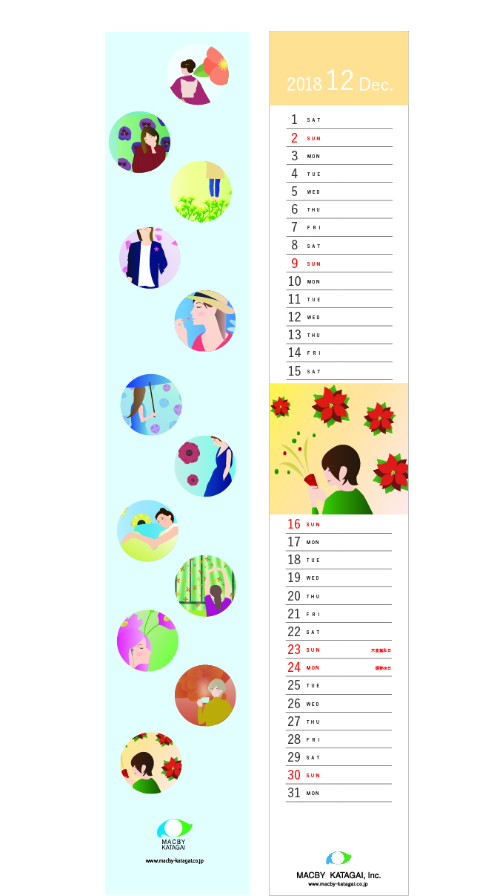

ペーパーバッグビジュアルデザイン
目の方向によって異なる見え方をするリップルボードの素材特性を生かし
目の向きの組み合わせ
をユニット毎にランダムに配置する事で、
複雑な光の反射をする模様を作り上げました。
株式会社マクビーカタガイ カレンダーデザイン
季節を彩る花+日常生活の女性
一人の女性の日常を時花が華やかに彩る様子をテーマに製作しました。

動物のピクトグラム
高田馬場に「BABAZOO」という動物園ができたという設定で制作したピクトグラム。
誰が見てもそれぞれの動物を認識できるよう、形、色の情報を削ぎ落とすよう意識して制作しました。
割り箸でつくる連続する形「捻れて昇る•螺旋」
割り箸を素材にユニットを作り、連続して配置することで立体を構成する課題。
ハの字型に組み合わせたユニットを螺旋状に連ねることで、捻れて昇る動きを表現しました。
すべて均等な間隔で繋げずにポイントでユニットの間隔をずらすことで、不揃いゆえの生々しさ、迫力ある動きを加えました。

ラクティブ六本木デザイナーズフラッグ・コンテスト2019 入選作品
「志、高く」
志を高く掲げ、夢を掴む。そんな強いメッセージを 六本木ヒルズの上で堂々と立つ人という構図で表現しました。